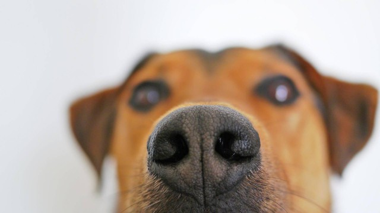
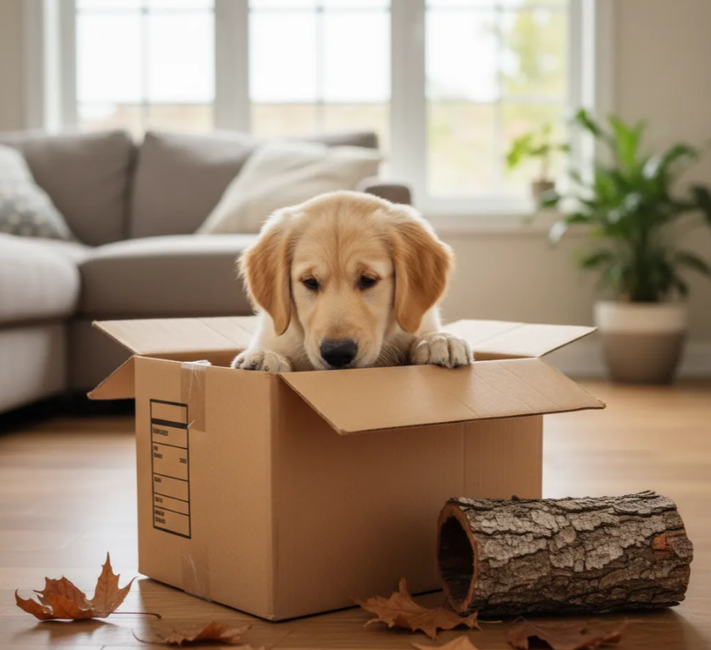
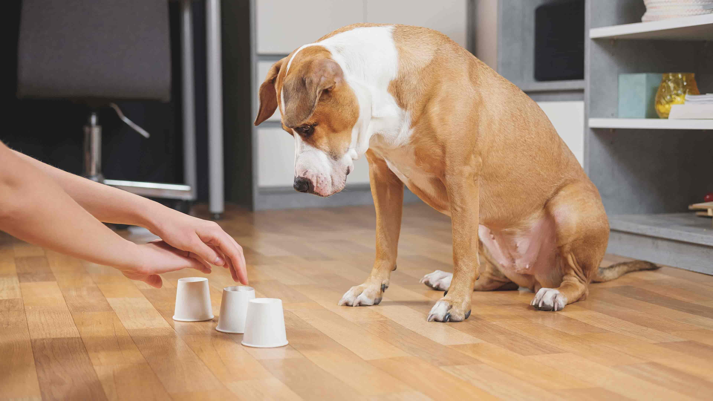
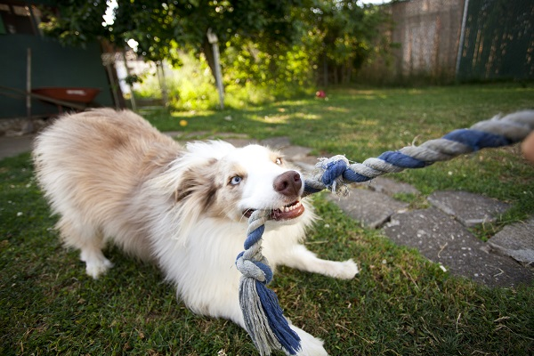

Seu Cão Não é “Desobediente”. Ele Só Está Entediado.¶
Por que o Enriquecimento Ambiental é a ferramenta mais importante (e mais negligenciada) no bem-estar canino.

1. O Problema de 10 Horas Sozinho¶
Nós humanizamos nossos cães. Damos a eles camas confortáveis, roupas, ração premium e muito amor. Mas esquecemos de uma coisa fundamental: eles ainda são cães.
Fato Biológico
Apesar de milênios de domesticação, o cérebro do Canis lupus familiaris ainda é o de um predador-oportunista. Eles são programados por 40.000 anos de evolução para uma vida de atividade: farejar, rastrear, perseguir, “caçar”, rasgar e roer.
E o que nós oferecemos em troca? Um apartamento silencioso por 10 horas, uma tigela de comida que é esvaziada em 30 segundos e um passeio de 20 minutos na mesma calçada de sempre.
Não é surpresa que eles desenvolvam o que chamamos de “problemas de comportamento”.
Cuidado: Interpretação Errada
Um cão que destrói o sofá não está se “vingando” porque você saiu. Ele está, na verdade, gritando: “Estou entediado e preciso de um trabalho!”
A solução para isso tem um nome técnico, mas uma aplicação muito prática: Enriquecimento Ambiental (EA).
2. O “Porque”: A Ciência por Trás do Conceito¶
"O problema não é o seu cão. É o tédio."
Para entender por que o Enriquecimento Ambiental funciona, precisamos olhar para os zoológicos da década de 70.
Os tratadores tinham um problema sério: ursos que andavam em círculos o dia todo, macacos que balançavam sem parar, tigres que lambiam as próprias patas até sangrar.

Isso não era “loucura”. Era tédio. Mesmo com comida e segurança, faltava uma coisa: desafios. O cérebro desses animais estava “desligado”, e isso gerava um estresse profundo. A solução foi o Enriquecimento Ambiental: esconder a comida, adicionar troncos para escalar, criar problemas para serem resolvidos. Os comportamentos repetitivos (chamados de estereotipias) pararam.
Seu cão é um lobo de apartamento¶
Pense no seu cão como um supercomputador projetado para “caçar”, rodando em um quarto escuro. A domesticação não apagou seus instintos básicos. A ciência chama isso de etograma: o “manual de instruções” de uma espécie.
Esse conflito é a fonte de quase todos os “problemas de comportamento”:
| O Etograma Diz (Instinto) | A Vida Moderna Diz (Realidade) |
|---|---|
| Fareje o mundo | Fique no sofá por 10 horas |
| Procure sua comida | Coma em 30 segundos na tigela |
| Persiga coisas | Passeio curto na guia |
| Rasgue carcaças | Não destrua nada |
O cão que destrói o sofá não está sendo “mau”. Ele está tentando, desesperadamente, cumprir seu etograma (o instinto de “rasgar”).
Henzel, 2014
O enriquecimento ambiental funciona porque ele finalmente dá ao cão um “trabalho” que faz sentido para o seu cérebro.
Cansar o cérebro > Cansar o corpo¶
Este é o conceito mais importante. O cérebro é o órgão que mais consome energia no corpo. Atividades que exigem foco, tomada de decisão e processamento de informações (como resolver um quebra-cabeça) são metabolicamente caras.
| Exercício Físico | Exercício Mental |
|---|---|
| Cansa os músculos | Cansa o cérebro |
| Caminhada de 5km | Treino de faro de 15 min |
| Cão bebe água e volta a pular | Cão relaxa e dorme |
| Baixo custo metabólico relativo | Alto custo metabólico (foco) |
O Superpoder: O Faro¶

O sentido número um do cão é o olfato.
| Humano | Cão |
|---|---|
| Dominado pela Visão | Dominado pelo Olfato |
| Vê o mundo | Processa dados químicos (Quem, quando, o quê) |
| Leitura visual | "Leitura" olfativa complexa |
Quando seu cão passa cinco minutos cheirando um poste, ele não está “sendo teimoso”. Ele está processando uma quantidade absurda de dados. É o equivalente a lermos um capítulo de um livro complexo.
Quando usamos o Enriquecimento Ambiental (como um tapete de fuçar), não estamos “dando um petisco”. Estamos ativando a parte mais poderosa do cérebro dele.
3. O “Como”: Os 5 Pilares do Enriquecimento Ambiental¶
Enriquecimento não é uma coisa só. É um “cardápio” de atividades que devem cobrir todas as necessidades instintivas do cão. A ciência comportamental (Henzel, 2014) divide o EA em cinco categorias principais.
3.1. Pilar Alimentar: O Fim do Desemprego Canino¶
A tigela de comida é a maior causa de “desemprego” no mundo canino.
Pense bem: o cão é um animal programado para passar horas do seu dia procurando, farejando e “resolvendo” como comer. Nós pegamos esse engenheiro biológico e o substituímos por uma tigela que é esvaziada em 30 segundos.
Fato Biológico: Contra-freeloading
A maioria dos animais, incluindo cães, quando tem a opção de comer de graça em uma tigela OU fazer um pequeno esforço para conseguir a mesma comida, eles preferem trabalhar pelo alimento. O ato de procurar (a caça, o desafio) é, em si, uma recompensa. (Inglis, 1997).
Como aplicar: Aposente a tigela. Cada refeição é uma oportunidade.
-
O Clássico (Kong): Recheie o brinquedo com a ração (misturada com algo pastoso e seguro, como iogurte natural) e congele.

-
O Farejador (Tapetes de Fuçar): Esconda a ração seca em um “tapete de fuçar” (snuffle mat). Isso ativa o olfato, que é a atividade cerebral número um do cão.

-
O Desafio (Dispositivos “Slow Feed”): Use comedouros-labirinto. Estudos como o de Ramos (2020) confirmam que aumentar o tempo de alimentação melhora o bem-estar.

3.2. Pilar Sensorial: O Cão Precisa Ler o “Jornal”¶
Nós, humanos, somos visuais. Cães são olfativos. O cérebro deles é dominado pelo bulbo olfativo, que é (proporcionalmente) 40 vezes maior que o nosso. Enquanto nós vemos o mundo, eles o cheiram em 3D.
Dica do Especialista: A Analogia do Jornal
Puxar o seu cão com a guia porque ele parou para cheirar um poste é o exato equivalente a alguém arrancar o celular da sua mão enquanto você está lendo uma notícia importante. O poste é o “jornal do bairro”.
Permitir que o cão fareje livremente diminui a frequência cardíaca e os níveis de cortisol (estresse). É uma atividade naturalmente calmante (Burn, 2017).
Como aplicar:
- O “Passeio de Faro” (Sniffari): Pelo menos algumas vezes por semana, use uma guia longa (3–5 metros) e deixe o cão ditar o caminho e o ritmo.

- O Delivery de Cheiros: Traga coisas novas para dentro de casa. Uma caixa de papelão da rua, folhas secas do parque, um pedaço de casca de árvore. 
3.3. Pilar Cognitivo: A Academia para o Cérebro¶
Este pilar é sobre resolução de problemas. Muitos cães, especialmente de raças de trabalho (Border Collies, Pastores, Poodles), foram selecionados geneticamente para... pensar.
Cuidado
Quando não damos problemas para eles resolverem, eles mesmos inventam problemas. E geralmente as soluções envolvem seus dentes e o pé da sua cadeira favorita.
Assim como nós, os cães sentem o “Efeito Eureka!”. Pesquisas mostram que cães que resolvem um problema sozinhos ficam visivelmente mais “felizes” e otimistas (McGowan, 2014).
Como aplicar:
-
Os Puzzles (Tabuleiros): Invista em jogos onde o cão precisa deslizar peças ou levantar pinos para achar um petisco.

-
O Básico (Treinamento): 10 minutos por dia ensinando “senta”, “rola” ou “toca a pata” é um exercício mental intenso.

-
O Jogo dos Copinhos: O clássico “cadê a bolinha?”. Esconda um petisco sob um de três copos e deixe-o usar o faro para acertar. 
3.4. Pilar Físico: O Prazer de Destruir (a Coisa Certa)¶
Este é um dos instintos menos compreendidos. Parte do etograma de um predador é rasgar e dissecar a carcaça. Cães têm uma necessidade física de usar os dentes e as patas para rasgar coisas.
Fato Biológico
Não é “raiva”, é um comportamento natural de forrageamento e consumo. Roer também é comprovadamente uma atividade auto-calmante que libera endorfinas, ajudando a aliviar o estresse. (ASPCA).
Como aplicar:
-
O Herói do EA (Caixa de Papelão): O melhor brinquedo e o mais barato. Entregue uma caixa de papelão (sem grampos ou fita) e deixe o cão destruí-la.

-
Os Naturais: Roer coisas como casca de coco verde ou madeira de café (própria para cães) satisfaz o instinto de “descascar”.
-
A Caixa de Cavar: Se seu cão ama cavar, crie uma “caixa de areia” e enterre brinquedos lá.

3.5. Pilar Social: Qualidade é Melhor que Quantidade¶
Cães são animais sociais, mas “socialização” é uma palavra mal interpretada. Não significa jogar seu cão em um parque lotado. Enriquecimento social significa interação de qualidade.
Analogia
Deixar o cão no mesmo sofá que você, enquanto você mexe no celular, não é interação. É a diferença entre estar em um elevador lotado (presença) e estar em um jantar com um bom amigo (interação).
O engajamento do tutor na brincadeira é fundamental para o relacionamento (Horváth, 2008).
Como aplicar:
- O Vínculo (Brincadeira Estruturada): Cabo de guerra é excelente (com regras). 
- O “Manejo” (Treino): As sessões de treino também são EA Social.

- A Observação: Sentar em um banco de praça e deixar o cão observar o mundo calmamente.

4. Conclusão: Mais que “Cansado”, um Cão Realizado¶
É hora de aposentar um dos clichês mais repetidos no mundo canino: a ideia de que “um cão cansado é um cão feliz”. Um cão exausto é apenas... exausto.
O verdadeiro oposto do tédio e da ansiedade não é o cansaço. É o propósito.
O Enriquecimento Ambiental oferece ao cérebro canino a chance de fazer exatamente aquilo para o qual ele foi projetado:
- Farejar o mundo;
- Resolver problemas para comer;
- Usar os dentes para rasgar e roer;
- Usar o corpo para explorar.
O Enriquecimento Ambiental não é um “extra”, um luxo ou um “mimo”. É uma necessidade biológica fundamental, tão essencial para a saúde mental do cão quanto a água é para a sua saúde física.
Comece simples: troque a tigela pelo Kong. Troque a pressa pelo faro. Ao fazer isso, você não estará apenas “cansando” seu cão. Você estará, finalmente, dando a ele a chance de ser um cão.
5. Referências (Para Aprofundar)¶
- RAMOS (2020). Impacto do enriquecimento ambiental sobre o comportamento de cães e digestibilidade da dieta em canil experimental.
- HENZEL (2014). O enriquecimento ambiental no bem-estar de cães e gatos. Monografia UFRGS.
- INGLIS et al. (1997). Contra-freeloading in domestic dogs.
- BURN et al. (2017). Best-practice scent-work for kennelled dogs.
- MCGOWAN et al. (2014). Positive affect and learning: exploring the ‘Eureka effect’ in dogs.
- ASPCA. Destructive Chewing.
- HORVÁTH et al. (2008). A new perspective on human-dog play.